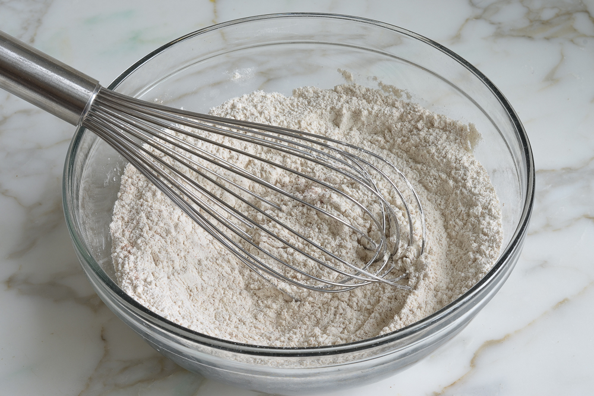
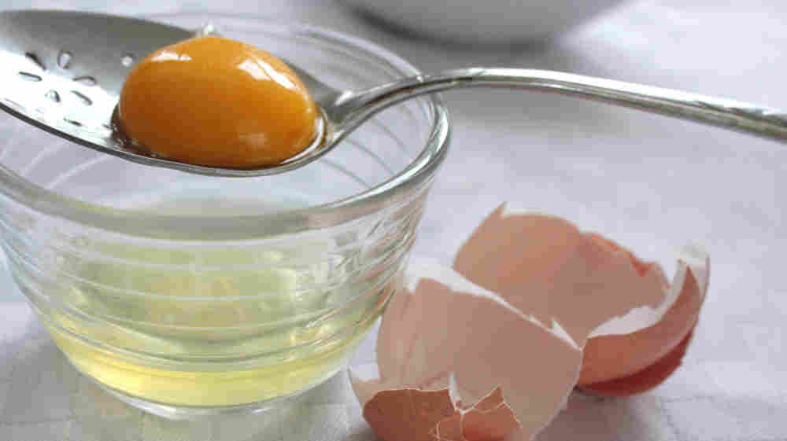
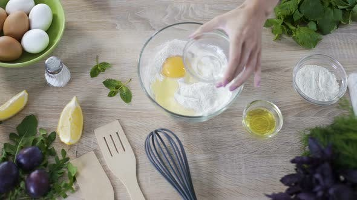
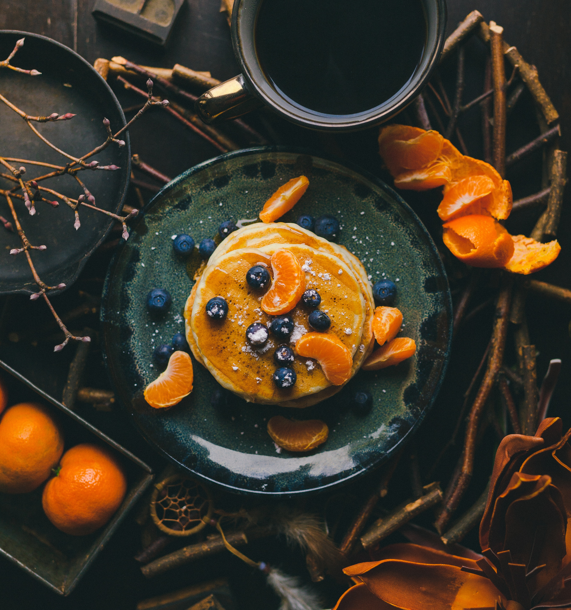

Ingredients
- 1 cup thick cream (enough flour, to make a stiff batter)
- 2 egg, yolks
- 1 teaspoon baking soda
- 2 egg, whites
- salt
Directions
- Add flour to thick cream to make a stiff batter
- Beat thoroughly
- Add beaten yolks of two eggs and baking soda
- Mix well, salting slightly
- Toss in beaten whites and bake on a griddle
You can also follow this picture tutorial. After all of the steps, whisk and cook on the stovetop as desired.
Step 1. 
Step 2. 
Step 3.

Step 4. 
Recommendation:
Top with warm syrup and fresh fruit, enjoy!
This recipe is quick and easy, it is designed to help Post-Milennials learn how to cook from scratch like their Grandma use to!
 Photo by Joseph Gonzalez